A Shallow Introduction to Deep Learning
Aidi Stan | Nov 4, 2014
A Shallow Introduction to
Artificial neuron
$$h_{W,b}(x)=f(W^Tx)=f(\sum_{i=1}^3 W_ix_i + b)$$
Activition function
$$f(z)=sigm(z)=\frac{1}{1+\exp(-z)}$$
Neural network (NN)
Calculate the output
Let \(a_i^{(l)}\) denote the activation of unit i in layer l , we can propagate the inputs through the network
$$\begin{align}
a_1^{(2)} &= f(W_{11}^{(1)}x_1 + W_{12}^{(1)} x_2 + W_{13}^{(1)} x_3 + b_1^{(1)}) \\
a_2^{(2)} &= f(W_{21}^{(1)}x_1 + W_{22}^{(1)} x_2 + W_{23}^{(1)} x_3 + b_2^{(1)}) \\
a_3^{(2)} &= f(W_{31}^{(1)}x_1 + W_{32}^{(1)} x_2 + W_{33}^{(1)} x_3 + b_3^{(1)}) \\
h_{W,b}(x) &= a_1^{(3)} = f(W_{11}^{(2)}a_1^{(2)} + W_{12}^{(2)} a_2^{(2)} + W_{13}^{(2)} a_3^{(2)} + b_1^{(2)})
\end{align}$$
Vectorize the equations
Let \(z_i^{(l)}\) denote the total weighted sum of inputs to unit i in layer l , including the bias term
Let \(f(\cdot )\) apply to vectors element-wisely: \(f([x, y])=[f(x), f(y)]\)
$$\begin{align}
z^{(2)} &= W^{(1)} x + b^{(1)} \\
a^{(2)} &= f(z^{(2)}) \\
z^{(3)} &= W^{(2)} a^{(2)} + b^{(2)} \\
h_{W,b}(x) &= a^{(3)} = f(z^{(3)})
\end{align}$$
Forward propagation
More generally
$$\begin{align}
z^{(l+1)} &= W^{(l)} a^{(l)} + b^{(l)} \\
a^{(l+1)} &= f(z^{(l+1)})
\end{align}$$
We call this step forward propagation .
Training NNs
It's straight to use m samples \(\left\{(x^{(i)},y^{(i)})\right\}\) to train the model, by minimizing the cost function , which we define to be
$$J(W,b)
= \frac{1}{m} \sum_{i=1}^m \left( \frac{1}{2} \left\| h_{W,b}(x^{(i)}) - y^{(i)} \right\|^2 \right)
+ \frac{\lambda}{2} \sum_{l=1}^{n_l-1} \; \sum_{i=1}^{s_l} \; \sum_{j=1}^{s_{l+1}} \left( W^{(l)}_{ji} \right)^2
$$
Gradient descent
One iteration of gradient descent updates the parameters as follows
$$\begin{align}
W_{ij}^{(l)} &\rightarrow W_{ij}^{(l)} - \alpha \frac{\partial}{\partial W_{ij}^{(l)}} J(W,b) \\
b_{i}^{(l)} &\rightarrow b_{i}^{(l)} - \alpha \frac{\partial}{\partial b_{i}^{(l)}} J(W,b)
\end{align}$$
where \(\alpha\) is the learning rate.
Backpropagation David et al., Nature, 1986
A efficient way to compute those partial derivatives
Initialize all the parameters randomly
Perform a forward propagation, computing the activations for all layers
For the output layer (layer \(n_l\))
$$\delta^{(n_l)} = - (y - a^{(n_l)}) \bullet f'(z^{(n_l)})$$
For other layers, from \(n_{l-1}\) down to \(n_1\)
$$\delta^{(l)} = \left((W^{(l)})^T \delta^{(l+1)}\right) \bullet f'(z^{(l)})$$
Compute the desired partial derivatives
$$\begin{align}
\nabla_{W^{(l)}} J(W,b;x,y) &= \delta^{(l+1)} (a^{(l)})^T, \\
\nabla_{b^{(l)}} J(W,b;x,y) &= \delta^{(l+1)}.
\end{align}$$
NN seems promising in the late 1980s
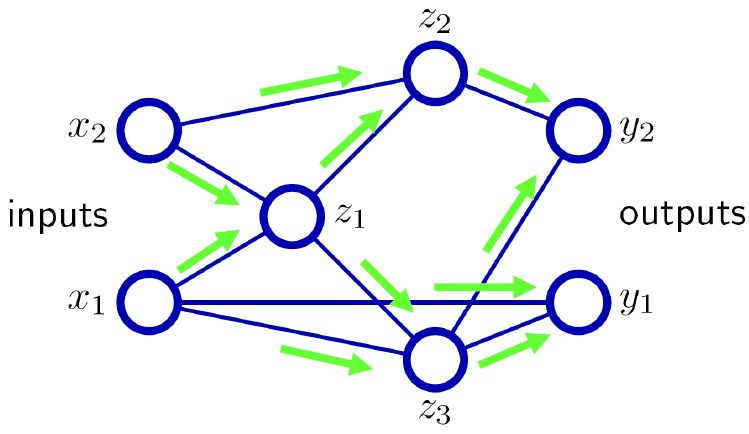
NN seems promising in the late 1980s
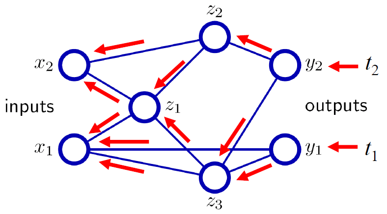
Visual cortex is hierarchical
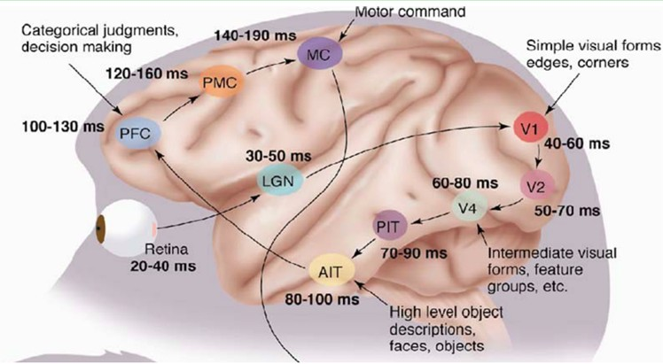
David H. Hubel et al., The Journal of physiology, 1962
Different levels of abstraction
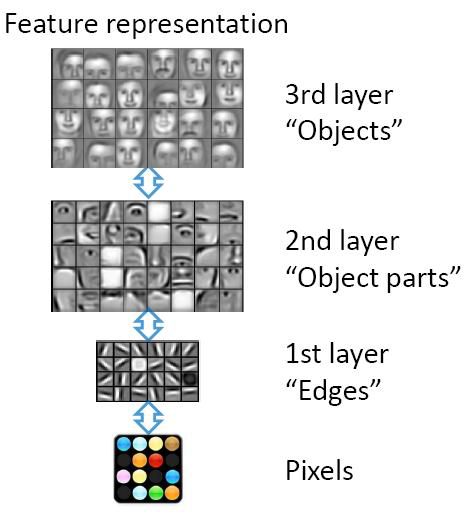
Efficient representation
A deep architecture trades space for time (or breadth for depth)
more layers, more sequential computation
but less hardware (units), less parallel computation
Example: N-bit parity
requires N-1 XOR gates in a tree of depth log(N).
requires an exponential number of gates if only 2 layers (Disjunctive normal form formula)
Deep neural network (DNN)
Simple to construct
Sigmoid nonlinearity for hidden layers
Softmax for the output layer
Hard to train
Backpropagation does not work well
Even worse than shallow neural networks
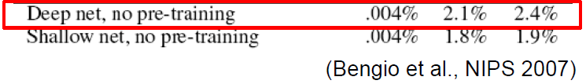
Difficulty of training DNNs (1990s)
Availability of data
Labeled data is often scarce
Not enough examples to fit the parameters of a complex model
Local optima
A highly non-convex optimization problem
Easily gets stuck in local minima
Diffusion of gradients
Below top few layers, correction signal is minimal
Other models dominanted the world
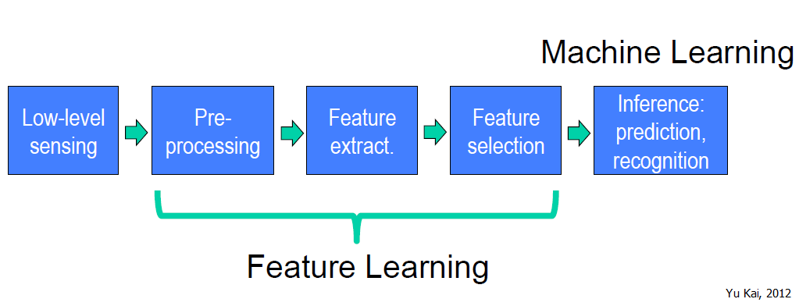
Hand-crafted visual features
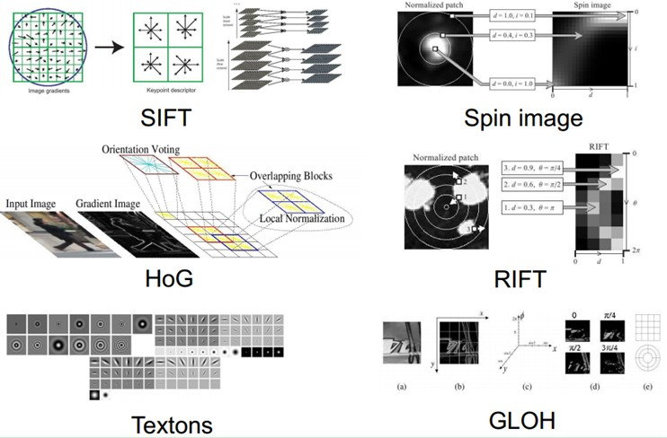
Autoencoder
Sparse autoencoder
A sparsity constraint is imposed
$$J_{sparse}(W,b)=J(W,b)+\beta\sum_{j=1}^{s_2}KL(\rho\|\hat\rho_j)$$
where \(\beta\) controls the weight, \(\hat\rho_j=\frac{1}{m}\sum_{i=1}^m \left[a_j^{(2)}(x^{(i)})\right]\), \(\rho\) is a sparsity parameter and \(KL(\rho\|\hat\rho_j)=\rho\log\frac{\rho}{\hat\rho_j} + (1-\rho)\log\frac{1-\rho}{1-\hat\rho_j}\) is the Kullback-leibler (KL) divergence
Softmax regression
A generalization of logistic regression
$$h_\theta(\mathbf{x}^{(i)}) = \left[ \begin{aligned}
P(y^{(i)} =& 1 | \mathbf{x}^{(i)}, \theta) \\
P(y^{(i)} =& 2 | \mathbf{x}^{(i)}, \theta) \\
&\vdots \\\
P(y^{(i)} =& k | \mathbf{x}^{(i)}, \theta)
\end{aligned} \right] = \frac{1}{\sum_{j=1}^k e^{\boldsymbol\theta_j^T \mathbf{x}^{(i)}}}
\left[ \begin{aligned}
&e^{\boldsymbol\theta_1^T \mathbf{x}^{(i)}} \\
&e^{\boldsymbol\theta_2^T \mathbf{x}^{(i)}} \\
&\vdots \\\
&e^{\boldsymbol\theta_k^T \mathbf{x}^{(i)}}
\end{aligned} \right]$$
Deep network training Hinton, Science, 2006
Use unsupervised learning (greedy layer-wise training)
Allows abstraction to develop naturally from one layer
Help the network initialize with good parameters
Perform supervised top-down training as final step
Refine the features (intermediate layers) so that they become more relevant to the task
Denoising autoencoder Vincent et.al., 2008
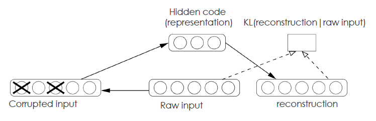
Further, we have stacked denoising autoencoders
Restricted Boltzmann Machines
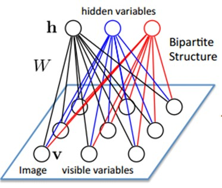
Deep Boltzman Machine Salakhutdinov & Hinton, 2009
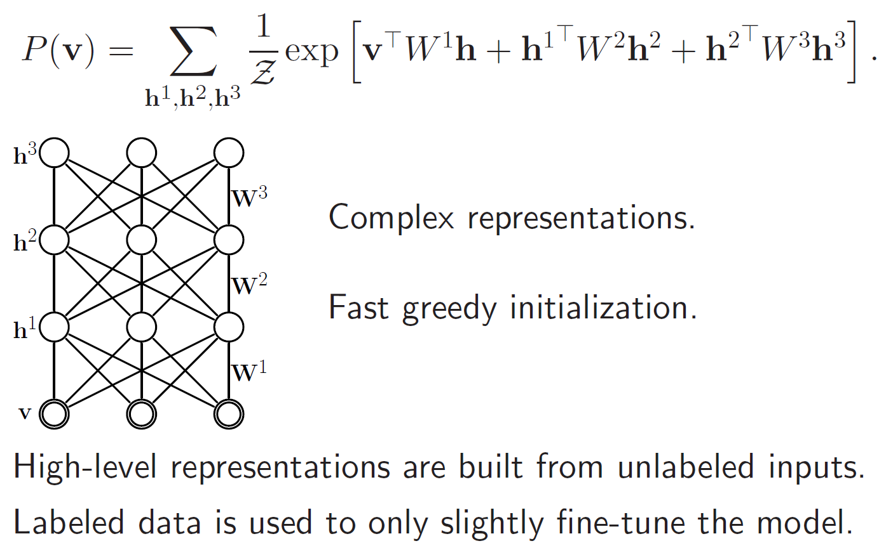
Deep Belief Network Hinton et.al., 2006
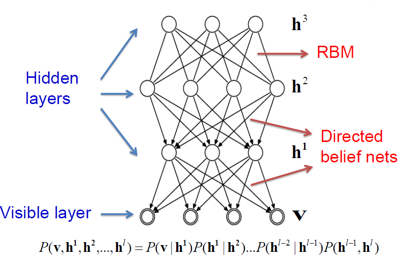
Convolutional neural network
Fully-connected neural net in high dim
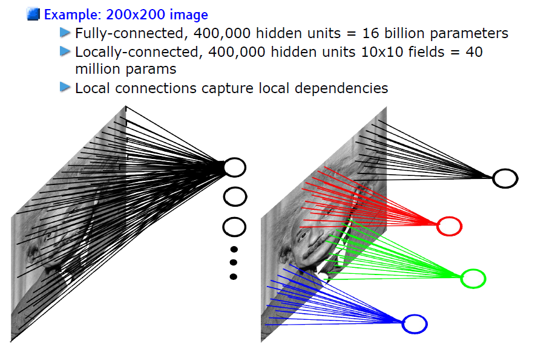
Convolutional neural network
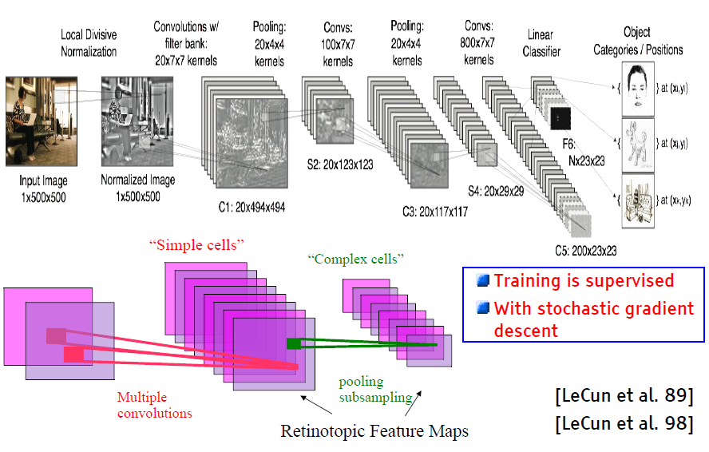
Deep Learning in Industry
Microsoft
Speech recognition, 2009
Speech translation technology, 2012
Skype translator, 2014
Demo in Tianjin, Oct 2012
Your browser does not support the video tag.
Demo on WPC, Jul 2014
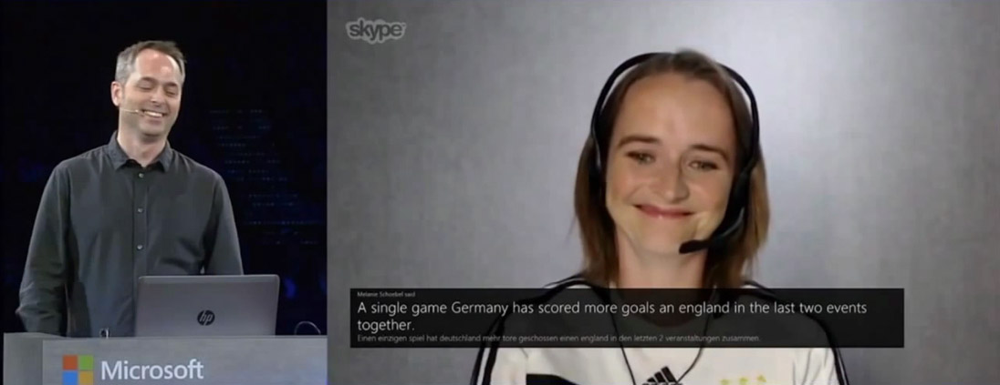
Google
"Google Brain" project since 2011
Company-wise large-scale deep learning infrastructure
Big success on images, speech and natural language processing
Baidu
Institute of Deep Learning (IDL), Jan 2013
Baidu Shitu, Nov 2013
Baidu
Product image retriever, Aug 2014
Challenges of Deep Learning
Understanding
Deep Learning involves non-convex loss functions
With non-convex losses, all bets are off
But to some of us all ���interesting��� learning is non convex
Hard to prove anything about deep learning, yet theories emerge
Scattering transform, Mallat
Split Bregman���, Osher
Algebraic geometry of DBN, Morton
...
Scaling
A large scale problem has lots of training samples (>10M), lots of classes (>10K) and lots of input dimensions (>10K).
Layters can not be trained independently and in parallel
Model can have lots of parameters that may clog the network
Model parallelism Jeffrey Dean et al., 2012
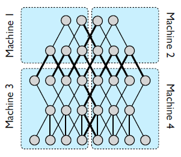
Data parallelism Jeffrey Dean et al., 2012
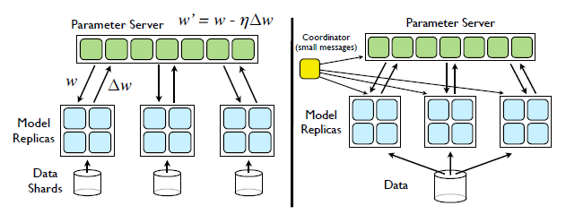
Reference
Rumelhart, D.E., Hinton, G.E. and Williams, R.J. (1986) Learning representations by back-propagating errors, Nature, 323, 533-536.
Hubel, D.H. and Wiesel, T.N. (1962) Receptive fields, binocular interaction and functional architecture in the cat's visual cortex, The Journal of physiology, 160, 106.
Bengio, Yoshua, et al. "Greedy layer-wise training of deep networks." Advances in neural information processing systems 19 (2007): 153.
Hinton, G.E. (2006) Reducing the Dimensionality of Data with Neural Networks, Science, 313, 504-507.
Vincent, Pascal, et al. "Extracting and composing robust features with denoising autoencoders." Proceedings of the 25th international conference on Machine learning. ACM, 2008.
Salakhutdinov, Ruslan, and Geoffrey E. Hinton. "Deep boltzmann machines." International Conference on Artificial Intelligence and Statistics. 2009.
Hinton, Geoffrey, Simon Osindero, and Yee-Whye Teh. "A fast learning algorithm for deep belief nets." Neural computation 18.7 (2006): 1527-1554.
Dean, J., Corrado, G., Monga, R., Chen, K., Devin, M., Mao, M., Senior, A., Tucker, P., Yang, K., Le, Q.V. and Others (2012) Large scale distributed deep networks.., 1223-1231.
The EndThanks for your time
See more on Github